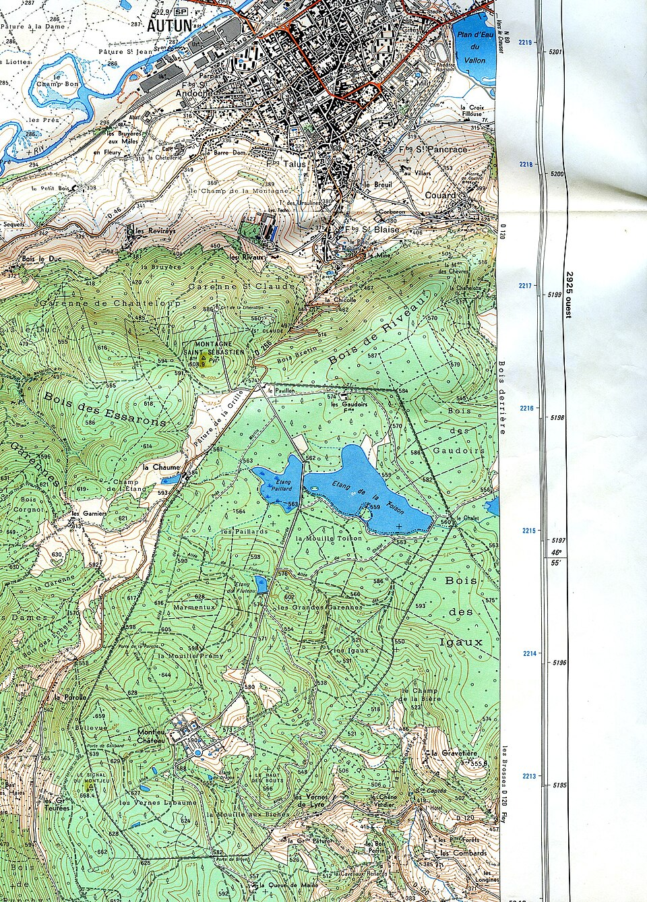
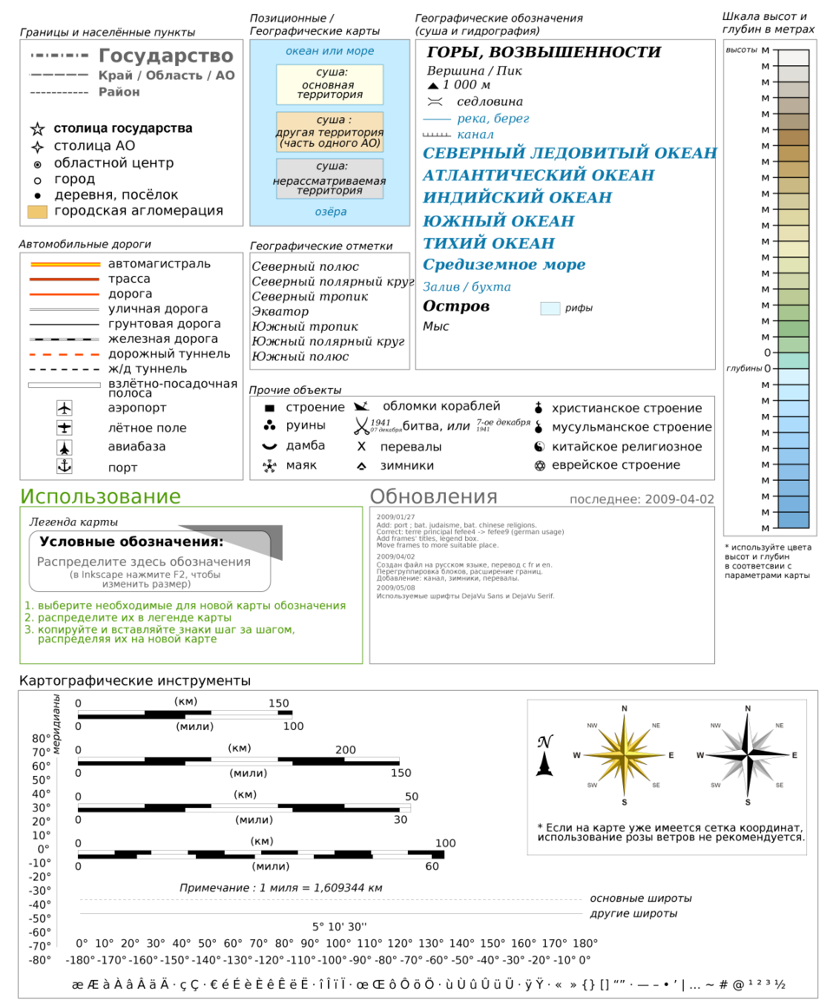
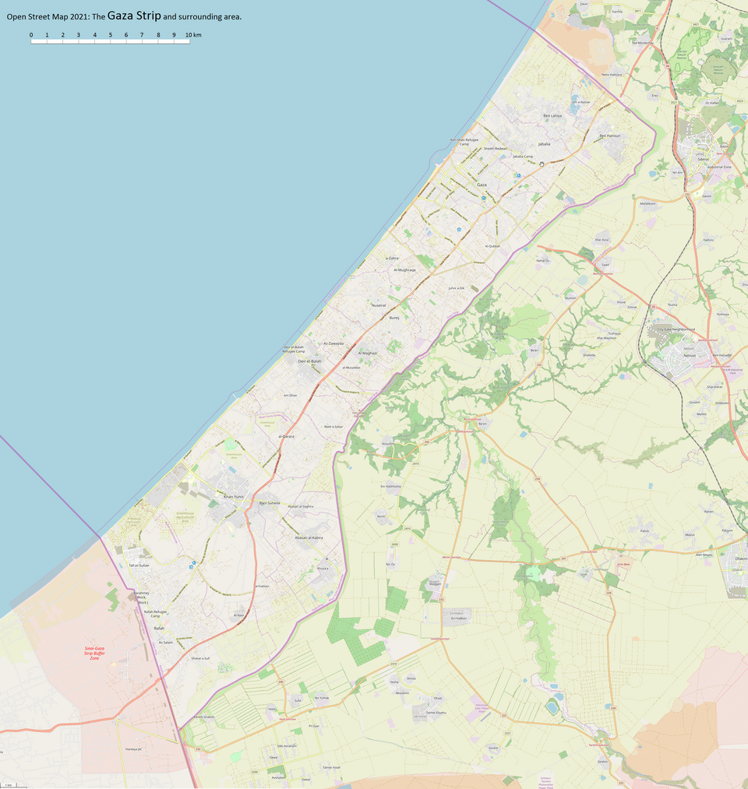
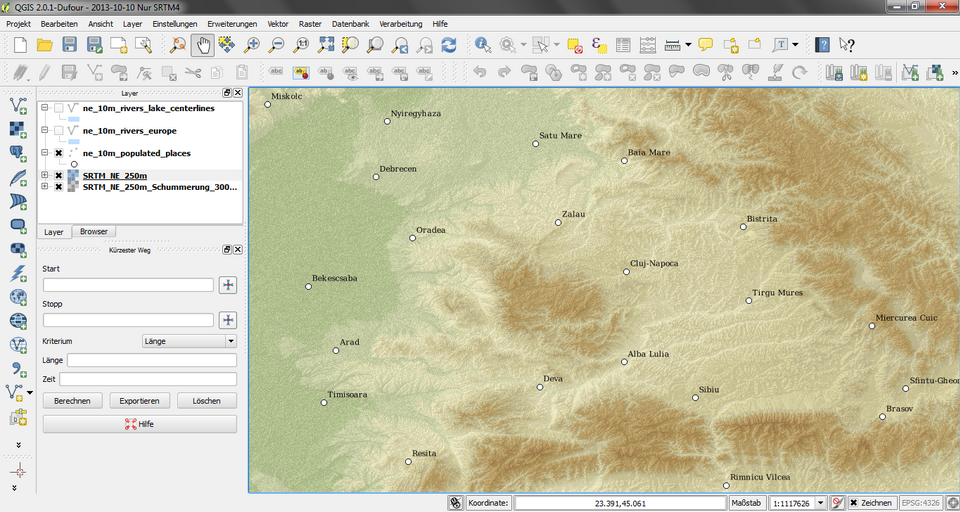
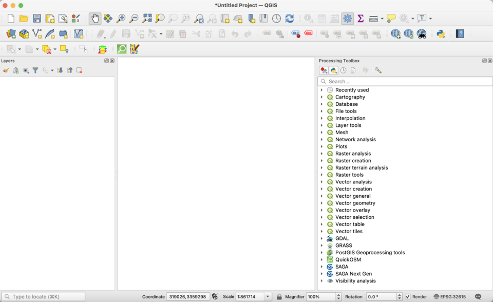

D, Les couches: references

IGN 1:25 000 Autun: green woodland tint, blue lake with water lining, km grid crosses. Borrowed: woodland green #BBD99B and grid crosses at each km.
A printed legend: each symbol in a small box with its name. Borrowed: the layer list as a legend (swatch + name), not a settings panel.
OSM rendering: land and water at near-equal value, roads as the only saturated lines. Borrowed: keep base tints close in value so lines carry the map.
QGIS layer tree with checkboxes over a hillshaded relief. Borrowed: one checkbox per layer, ticked when the field is valid.
QGIS status bar: coordinate, scale, magnifier, rotation, EPSG code. Borrowed: 'EPSG:4326 1:25 000 36.8065 N 10.1815 E' as the footer.